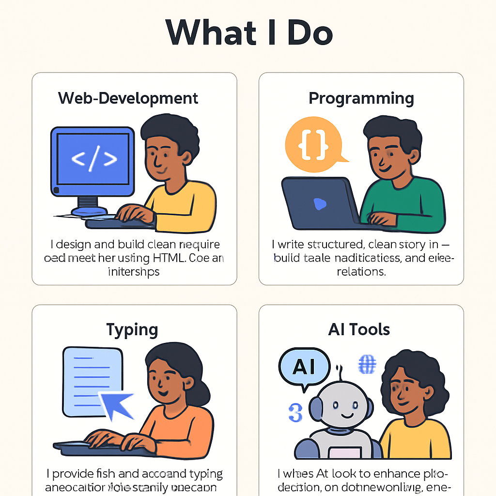

About Me
I’m Emmanuel – a passionate student learning web development. I love turning ideas into websites and exploring tools that improve our digital lives.
Web Developer • Student • Tech Enthusiast
I’m Emmanuel – a passionate student learning web development. I love turning ideas into websites and exploring tools that improve our digital lives.

A clean app that helps you track your expenses. Built with web tools for real-world use. Organized, fast, and easy to maintain.

I’m always building new things. From coding projects to experiments with design — learning never stops!

I love using typing platforms and AI tools to boost productivity and creativity.
I enjoy trying out different ideas and building things for practice. Here's one of my latest visual concepts.
Email: emmanuelkilel44@gmail.com
GitHub: just4koros
Student Web Developer | Hackathon Enthusiast
I'm Emmanuel Koros, a Kenyan student passionate about web development and coding. I enjoy building clean, responsive websites and solving real-world problems using HTML, CSS, and Python.
Problem: Many communities struggle with efficient waste management. Our project offers a digital platform to help users report, track, and manage local waste issues.
My Role:
My Role: I worked on the frontend interface using HTML and CSS, and assisted with GitHub version control and testing.
>>>>>>> ba5913cf30fd0e05118598c26e43aba3ba6c6e65